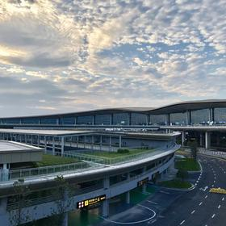
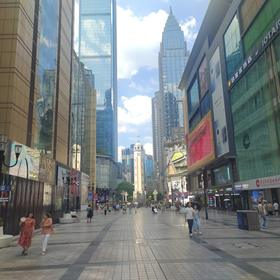
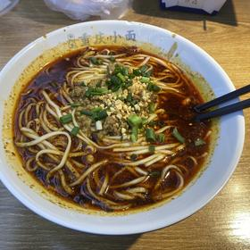
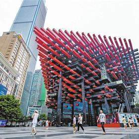
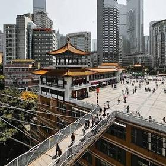
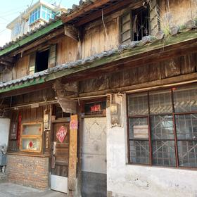
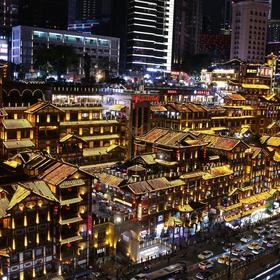
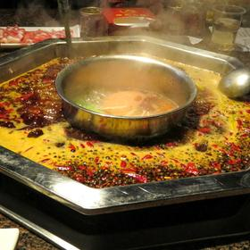

06:00 ✈️ ออกจากดอนเมือง FD556 4 ชม. 10 น.
เวลาไทย 06:00 ถึงฉงชิ่ง 10:10 ตามเวลาจีน · ตั้งนาฬิกาเร็วขึ้น 1 ชั่วโมงตั้งแต่บนเครื่อง · FD เป็นโลว์คอสต์ ต้องซื้อน้ำหนักกระเป๋าแยกครบ 7 ใบตั้งแต่ตอนจอง ไม่งั้นจ่ายหน้าเคาน์เตอร์แพงกว่ามาก
✈️ เครื่องบินตรง DMK–CKG · ~2,000 กม. · 4 ชม. 10 น.

10:10 🏨 ถึงสนามบินเจียงเป่ย CKG 1 ชม.
คนไทยไม่ต้องขอวีซ่า อยู่ได้ 30 วัน · ผ่าน ตม. รับกระเป๋า · ทดลองจ่าย Alipay หรือ WeChat Pay ครั้งแรกที่ร้านในสนามบิน จะได้รู้ตั้งแต่ตอนนี้ว่าบัตรผ่านไหม ก่อนไปเจอตู้ขายตั๋วที่ไม่รับบัตรต่างชาติ
🚐 มินิแวน 9 ที่นั่ง · 24.5 กม. · 40 น.
11:10 🚗 มินิแวนเข้าเมือง 40 น.
เหมา van 9 ที่นั่ง 1 คัน ¥220–280 ต่อเที่ยว รวมค่าทางด่วนและที่จอดแล้ว รอฟรี 90 นาที · รองรับ 7 คนพร้อมกระเป๋าใหญ่ 7 ใบ · รถไฟฟ้าสาย 10 ก็ถึงใน 50 นาทีราคา ¥7 แต่ลากกระเป๋าใหญ่ 7 ใบเปลี่ยนสายไม่ไหว
🚐 มินิแวนส่งถึงหน้าที่พัก

12:00 🏨 เช็กอินที่พักย่านเจี่ยฟ่างเปย 1 ชม.
ย่านเจี่ยฟ่างเปยเป็นใจกลางคาบสมุทร Yuzhong — 12 จาก 13 จุดในทริปนี้อยู่ในรัศมีเดินกับรถไฟฟ้า
🚶 เดินในย่านเจี่ยฟ่างเปย · 0.3 กม. · 5 น.

13:00 🍽️ กลางวัน — บะหมี่ฉงชิ่ง เสี่ยวเมี่ยน 1 ชม.
บะหมี่แห้งคลุกพริกกับถั่วลิสงป่น ชามละ ¥10–15 เป็นอาหารเช้าประจำของคนฉงชิ่ง · สั่งแบบ 微辣 (เผ็ดน้อย) ไว้ก่อนถ้ายังไม่ชิน
🚶 เดินจากร้าน · 0.3 กม. · 5 น.

14:30 🏔️ ถนนคนเดินเจี่ยฟ่างเปย + ตึกตะเกียบ 2 ชม.
อนุสาวรีย์ปลดแอกกลางวงเวียนเป็นหมุดศูนย์กลางเมือง ล้อมด้วยตึกสูงทุกด้าน · เดินต่ออีก 300 เมตรถึง Guotai Arts Centre อาคารสีแดงดำที่โครงเหล็กสานกันเหมือนตะเกียบมัดใหญ่
📸 จุดถ่ายรูป: อนุสาวรีย์ปลดแอกกับตึกสูงล้อมรอบ ถ่ายจากมุมต่ำให้เห็นความสูง
🚶 เดิน (อยู่ติดเจี่ยฟ่างเปย) · 0.4 กม. · 7 น.

16:30 🏔️ Kuixinglou ตึกชั้น 22 45 น.
เดินจากถนนเข้าไปไม่กี่ก้าว แต่ที่ยืนอยู่คือชั้น 22 ของอาคารอีกฝั่ง เพราะพื้นเมืองสองระดับต่างกัน 70 เมตร มีสะพานลอยเชื่อมให้เดินข้าม เข้าฟรี
🚶 เดินลงทางบันไดสู่หน้าผา · 0.6 กม. · 10 น.

17:30 🏔️ Daijia Alley ซอยคาเฟ่ริมผา 1 ชม.
ซอยเก่าบนหน้าผาที่ปรับเป็นคาเฟ่เรียงยาว มองลงไปเห็นหงหยาต้งเต็มตา · นั่งรอไฟติดตรงนี้ได้เลย ไม่ต้องไปเบียดข้างล่าง
📸 จุดถ่ายรูป: หงหยาต้งทั้งหลังจากระเบียงคาเฟ่ ก่อนลงไปเบียดข้างล่าง
🚶 เดินลงจากซอยสู่ชั้น 11 หงหยาต้ง · 0.3 กม. · 6 น.

18:30 🏔️ หงหยาต้ง — ไฟเปิด 1 ชม. 45 น.
ไฟเปิด 18:00–18:30 ดับ 22:30 · อาคาร 11 ชั้นเกาะหน้าผาริมแม่น้ำ เข้าฟรีตลอด · เข้าจากชั้น 11 ถนน Cangbai Road ซึ่งอยู่ระดับถนน แล้วเดินลง อย่าไปต่อแถวลิฟต์นอกอาคาร ช่วง 20:00–21:30 คิวเป็นชั่วโมง · ชั้น 5 เป็นโซนย้อนยุค 重逢1980 เดินรอบนอกฟรี โซนในมีโชว์โฮโลแกรม ¥39
📸 จุดถ่ายรูป: ชั้น 11 ที่เป็นระดับถนน มองลงไปเห็นทั้ง 11 ชั้นเรียงลงไปถึงแม่น้ำ
🚶 เดินขึ้นสะพาน · 0.5 กม. · 9 น.
20:15 🏔️ สะพาน Qiansimen ถ่ายรูป 45 น.
จุดถ่ายหงหยาต้งที่ดีที่สุด เห็นทั้งหลังพร้อมแม่น้ำและตึกฝั่งตรงข้ามในเฟรมเดียว เดินข้ามได้ฟรี
📸 จุดถ่ายรูป: กลางสะพานเชียนซือเหมิน ได้หงหยาต้งเต็มหลังพร้อมแม่น้ำในเฟรมเดียว
🚶 เดินกลับย่านเจี่ยฟ่างเปย · 0.8 กม. · 12 น.

21:00 🍽️ หม้อไฟหม่าล่ามื้อแรก 1 ชม. 30 น.
หม้อไฟฉงชิ่งใช้พริกกับหมาล่าหนักกว่าเสฉวนมาก สั่งหม้อแบ่งครึ่ง 鸳鸯锅 จะได้มีฝั่งน้ำใสไว้หนี · ประมาณ ¥120 ต่อคนรวมเครื่องดื่ม